notes by Dan Peirce B.Sc.
Feb. 17, 2012
Lots of questions come up when someone is running this lab for the first time. I'm putting together some notes here to help me remember details down the road and possibly to help others running the lab for the first time.
We use a modified Dynex webcam (modified by Bob).
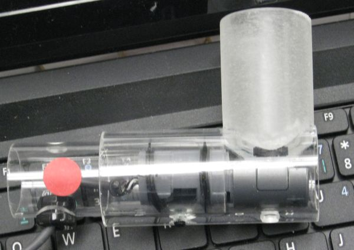
We are using the Live!Cam Center software on Netbooks.
For the lab we are using the original webcam lens as a dust cap for the CCD sensor underneath. The lens can still be used with the webcam when it is not attached to a telescope (as in some of the images farther down this page).
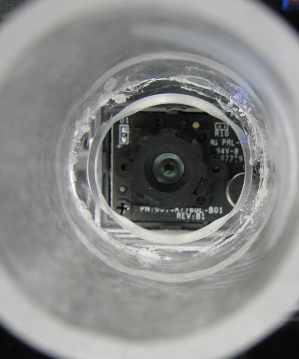
When the lens is removed the CCD is exposed. And this is the way we use the modified webcam on the telescope. The lens is mounted in a plastic housing that screws into a support on the webcam. When the lens is used the webcam is focused by turning the lens housing (we use long nose pliers).
The lens in the housing looks like this:
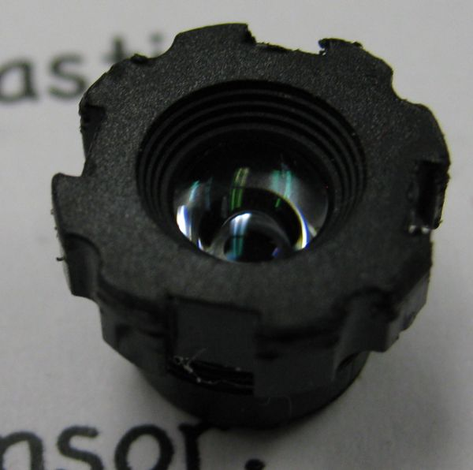
Exposed CCD sensor (lens removed)
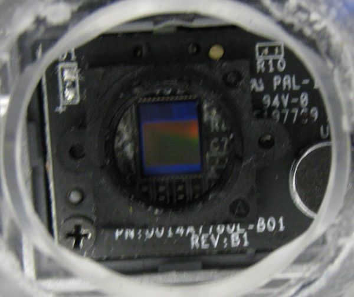
The Live!Cam Center is opened with a desktop icon.
Live!Cam Console also opens (but needs to be shut for all features of Live!Cam Center to operate)
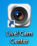
The photos taken from different groups have different file sizes and different resolutions.
The Live Cam Center software for Dynex webcam allows for different resolutions. If a higher resolution is selected it will not be possible to fit all the images onto a combined image.
For future reference I believe it has been recommended in the past the the auto-exposure feature be turned off. I think once the manual exposure is set is should be kept the same for all the images since they are to be fitted together into one big image. It makes no sense to have the exposure changing from one part of the image to the other (which is what auto-exposure would do since different photos have different amounts of the black background in the image.
- Fergal used a setting of 640x480.
- In the arcsoft collage creator software he used a custom paper size of 11x 19in.
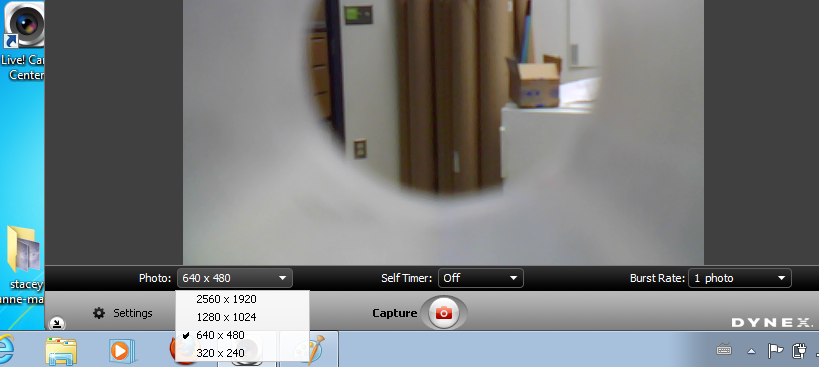
In the Live! Cam Console uncheck Auto Exposure (suggestion)
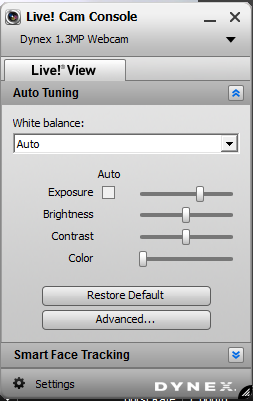
To get to the Live! Cam Console
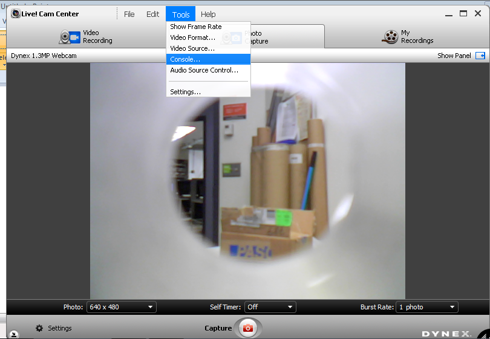
When the lab was done last week there was an issue with condensation on the outside surfaces of the telescope. To get clear images the outside of the corrector lens (1) must be kept free of condensation.
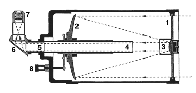
The modified webcam fits into the rear of the telescope with the 90o degree prism (6) removed but the Celestron's Skylight Filter/Dust Seal in place. If the seal were removed one might get condensation on the inside of the telescope.
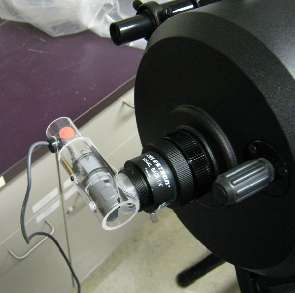
| Looking into back of telescope Filter/Dust
Seal is visible 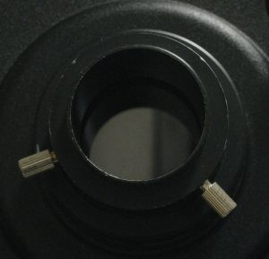 |
Filter/Dust Seal with mount removed
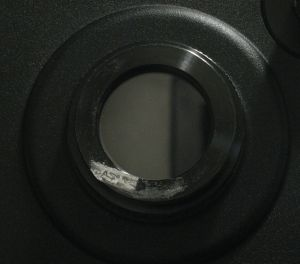 |
On the Live!Cam Console images shown earlier in these notes a significant portion of the image was obscured with the mounting plastic.This is because the original webcam lens used in those photos has a high curvature making it a wide angle lens. When the lens is removed and the CCD is placed at the focal point of the telescope the light reaching the CCD does not come from such a wide angle and the mount is not in the field of view.
Example Moon Image
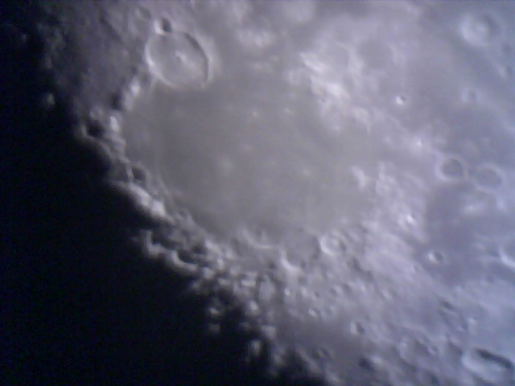